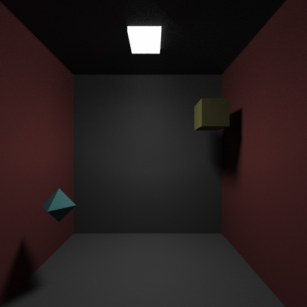

DooVR
DooVR is an application that I'm currently working on. It's a 3D modelling application that lets users create 3D models in Virtual Reality. A more detailed description of the project can be found here.
Throughout this project I have had a leading role. I have worked with on datastructures, rendering, interface, user testing, calibration and synchronisation of tracking devices, integration of a lot of different APIs and much more.
I have met loads of different people through this project, at conventions, events, research centers and universities. It also lead to a 6 month employment and partnership with a research group at Linköpings University.
OGIR
OGIR is a simple Monte Carlo raytracer that me and Jonathan Bosson made during the course TNCG15 "Advanced Global Illumination and Rendering" at Linköpings University. The github repository can be found here on the branch "dMCfunctionality".
During this project I worked mainly with rendering functions, datastructures and physics calculations.
AKRS3D
AKRS3D is a simple physics engine made in the course TNG022 "Modellbygge och simulering" at Linköpings university. The github repository can be found here.
During this project I worked mainly with physics calculations and datastructures.
CryEngine 3 Game
This was a game that me and 4 other people made in the course TNM061 "3D Graphics" at Linköpings University. It was a game about chasing other players across a futuristic landscape. The gameplay focused on acrobatic movement like sliding, sprinting, wall-running, jumping and jump pads. The following is a video showcasing the movement of the playable character in a small debugging level
During this project I worked mainly with physics and gameplay programming but also did some modelling, animation and rigging work.
Education
I'm currently studying Media Technology at Linköpings University. It's a masters programme of five years that is mainly focused on mathematics, programming, image reproduction and analysis. I'm currently in my fourth year. I have focused my education mainly around 3D graphics and back end programming.
My grades can be found here. My avarage score is 4.5. The swedish metric goes from 3 to 5.